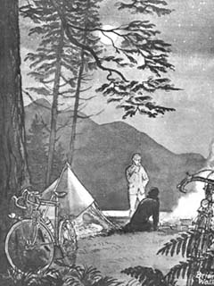
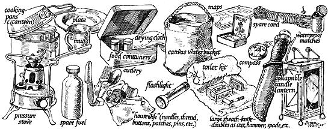
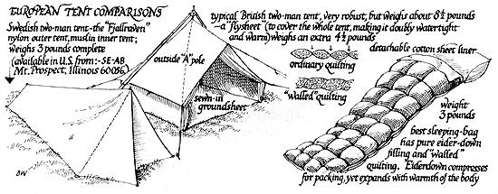
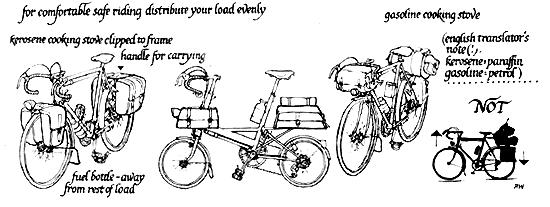
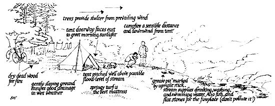
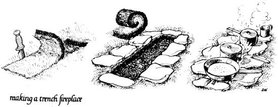
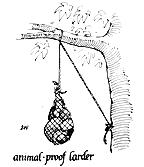
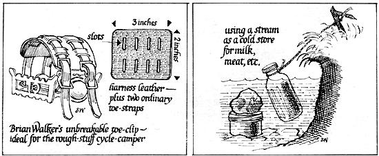

A TENDERFOOT'S GUIDE
TO PAINLESS CYCLE-CAMPING.
Reprinted from BICYCLING! Magazine/256 Sutter Street/San Francisco, California 94108/Monthly/Single Issue, 60 cents/US One Year, $6.00/Foreign One Year, $7.00
It is as appropriate for me, a mere Englishman, to address an American audience on the subject of camping as it would be for a hotel chef to advise the citizens of Olympus on the preparation of ambrosia. But it is possible that while you and the Olympians have such unsurpassable raw material, that chef and I possess mortal scars and bitter experience which could be of service to you loftier beings.
Let's face it, you have all the advantages, the sort of situation that I have often dreamed of, but can never know. In your huge continent you have great areas of solitude: mountains, forest and desert that cry out for adventurous cycle-camping; you have a tradition and literature of overland pioneering second to none, and to cap it all, cycling in your country is a booming sport and pastime.
I believe that the major hurdle one has to jump before becoming a cycle-camper is one of philosophy and logic. Here are four maxims for the apprentice camper to chew over:
"To go light is to play the game fairly. The man in the woods matches himself against the forces of nature. In the towns he is warmed and fed and clothed so spontaneously and easily that after a time he perforce begins to doubt himself, to wonder whether his powers are not atrophied from disuse. "
". . .go light, for a superabundance of paraphernalia proves always more of a care than a satisfaction. "
"To go light, discard all but the really necessary articles. "
"When you return from a trip, turn your duffel bag upside down on the floor. Of the contents make three piles. . . Pile number one should comprise those articles you have used every day; pile number two, those you have used occasionally; pile number three, those you have not used at all. If you are resolute and single-minded, you will at once discard the latter two. "
Those are quotes from American writer Stewart Edward White's "The Forest" written in 1903, long since out of print, but a book I would like to see in every school library. Notice White's insistance on going light. Lightness and simplicity are the most important factors in the selection of your equipment, while you must search your own soul to find whether you yourself are geared to the pastime. Ask yourself the question, "What do I want out of camping?" If the answer is something like, "To travel without fuss, to be really mobile, to be thoroughly independent, to achieve the maxi mum appreciation of the country in all its moods and conditions, to harmonize in every possible way with my surroundings without creating disturbance and show, and to use. my own resources and health as fully as I can to those ends," then the battle is half won. Too many would-be campers make the mistake of trying to modify city methods to suit
open-air conditions, and fail to modify themselves to fit the life of the wilderness.
In the illustrated panel above I have in detail enumerated my maximum kit for a prolonged cycle-camping journey. But I improve considerably on this amount (I mean by cutting it down, of course) for journeys of only a few days' length. Remember one more maxim. "The really successful lightweight camper is one whose pack shrinks every year and whose enjoyment increases in ratio with every vanished ounce." I don't know if Steward Edward White actually said that, but if he didn't, he jolly well ought to have.
Just two examples to point the lesson. For instance, the novice camper will wear rubber boots in the rain-the, experienced camper will wear an old pair of sneakers. To wash the dishes the novice will take a polythene bowl, a squashy plastic thing of detergent. a dishcloth and a pan-scourer, heat up a kettle of water on a gas stove, pour the water into the bowl and put the bowl on a wobbly folding table. The lightweight man, once he's served his meal (and he should know how to cook and eat well!) will have already put back on to the fire the biggest pan he's used in his cooking, and by the time he has eaten, the water with be hot enough. Rockgrown moss or sandy turf are excellent pan scourers and his table is the hot firestone. The novice will have used seven unnecessary pieces of equipment, taken longer, worried about where he's put everything and insulted the landscape with his town-made toys. And that's just washing up!
Myself, I am a medium-weight cycle-camper, yet for such camping as I enjoyed, crossing the volcanic deserts of Iceland a few years ago on a four-man cycle-camping expedition inclusive of winter-weight clothes, stoves (no wood for fires in Iceland!) fuel, cameras, food stores, etc., we each carried a maximum of 35 pounds-this we considered excessively heavy. Compared with the elderly man we met there who had all his gear in his pockets and a tiny angler's pouch, or the couple who could reduce their bicycles and camping equipment to the 40 pounds air travel limit each, we were ponderous, indeed.
So much for equipment-now how to use it. The worst time in the cyclecamper's day is when he has to decide where to pitch camp. There's always the possibility of somewhere better, just a bit further on. (For the sake of this article I'm ignoring organized camp sites.) Ideally, one should camp far away from roads and houses, on gently sloping ground, never in a hollow or too close to a stream (those are my priorities, anyway-when camping, I dislike the thought of cars, house-bound people and flooding!) Pitch your tent in the down-wind shelter of trees by all means, but never under trees-heavy drips after rain will soak your tent, and wood-ants and mosquitos will invade you.
Check your proposed bed-space for rocks or other protuberances. You're not going to need a sissy air mattress to lull you to sleep after 70-80 hilly miles-a few pine tree fronds and a spare sweater under the hips and shoulders should be the extent of anyone's cossetting. Pitch your tent with its door facing east, so that the morning sun will revive, warm and dry you. Local climatic conditions may force you to vary this rule. Ideally choose a site where your view is agreeable. Your fire should be sited down-wind of the tent, its immediate area cleared of dry brushwood or inflammable dead grass. A trench fire is best-about two feet six inches long, ten inches wide at the upwind end, four inches wide at the down-wind end. With the big sheath knife cut out the turf as deep as you can to these dimensions. Edge this trench with flat stones (not granite, it explodes) or green logs. Put the piece of turf somewhere handy for replacing when you strike camp. Your cooking pots will rest on the stone or log edges of the fireplace. A low bright fire is best to cook with, so collect dry wood-dead branches on trees are usually the driest. De-turf and excavate a nearby "grease-pit" for your kitchen waste. Cooking is a subject all of its own, and excellent meals may be prepared with the simplest equipment. With experience, appetizing and elaborate meals can be cooked in the bleakest conditions on a couple of half-pint kerosene pressure stoves. All my cooking equipment, mugs and plates, etc., are of aluminum; it's light, strong, easily cleaned and fire proof.
Before turning in for the night-usually after a prolonged yarning session with my companion in the warmth and light of the enlarged campfire, I put sufficient dry kindly wood under the eaves of the tent to start the fire next morning. If an early start is planned, I don't bother with a morning fire; the porridge, bacon, eggs, and tea being boiled, fried and brewed over the kerosene or gasoline pressure stove. Without making odious comparisons (as they say) one filling of my half-pint kerosene pressure stove lasts exactly two hours; the stove weighs a matter of ounces, two one-pint aluminum feeding bottles of fuel clipped to the bike frame, away from the rest of the baggage, constitutes a further eight hours' cooking and warmth. And kerosene and gasoline are universally available and cheap.
|
 |
 |
 |
|
 |
 |
 |
|
 |
 |
|